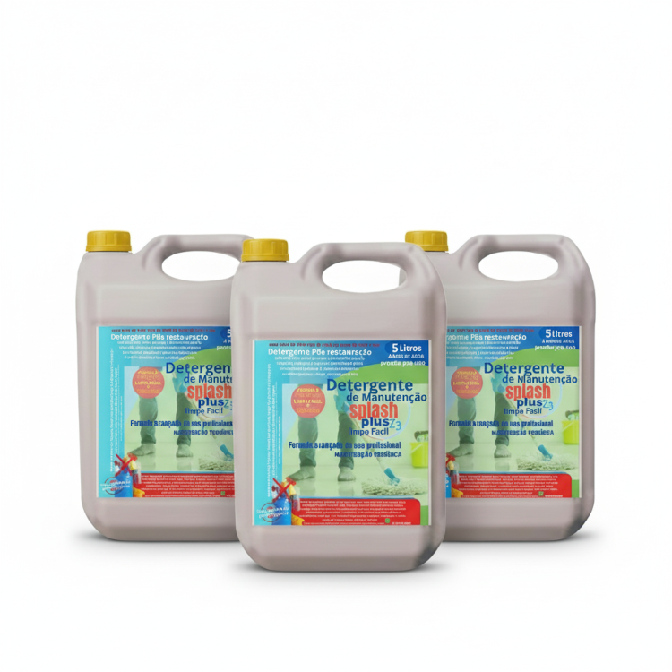

SINTA A LIMPEZA ACONTECER: CONHEÇA OS PRODUTOS ZAESTRAVITTA!
Com a ZaestraVitta, o poder da alta perfomance remove 100% da sujeira mais teimosa, deixando a limpeza rápida e fácil.

Com a ZaestraVitta, o poder da alta perfomance remove 100% da sujeira mais teimosa, deixando a limpeza rápida e fácil.

O desincrustante é um limpador de alta potência, ideal para remover 100% das sujeiras mais resistentes e minerais, como calcário, ferrugem e crostas em banheiros e rejuntes, agindo sem a necessidade de grande esforço físico.

O Mago Multi-Uso é o limpador versátil 5 em 1 da ZaestraVitta, que garante a limpeza diária completa em toda a casa, removendo gordura, limpando vidros e desinfetando com um único produto prático.

O Rapidão Plus é o restaurador de pisos de alta força profissional da ZaestraVitta, formulado para remover encardidos, manchas e sujeira entranhada de pisos porosos e pedras, devolvendo o aspecto de novo sem agredir a superfície.

O Detergente de Manutenção Splash Plus é o produto de uso profissional da ZaestraVitta, que garante a limpeza diária e protege o piso após a restauração, fazendo com que o resultado de limpeza dure por muito mais tempo.